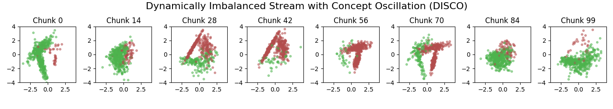

Welcome to stream-learn documentation!¶
User Guide¶
The stream-learn module is a set of tools necessary for processing data streams using scikit-learn estimators. The batch processing approach is used here, where the dataset is passed to the classifier in smaller, consecutive subsets called chunks. The module consists of five sub-modules:
streams - containing a data stream generator that allows obtaining both stationary and dynamic distributions in accordance with various types of concept drift (also in the field of a priori probability, i.e. dynamically unbalanced data) and a parser of the standard ARFF file format.
evaluators - containing classes for running experiments on stream data in accordance with the Test-Then-Train and Prequential methodology.
classifiers - containing sample stream classifiers,
ensembles - containing standard team models of stream data classification,
metrics - containing typical classification quality metrics in data streams.
You can read more about each module in the User Guide.
Getting started¶
A brief description of the installation process and basic usage of the module in a simple experiment.
API Documentation¶
Precise API description of all the classes and functions implemented in the module.